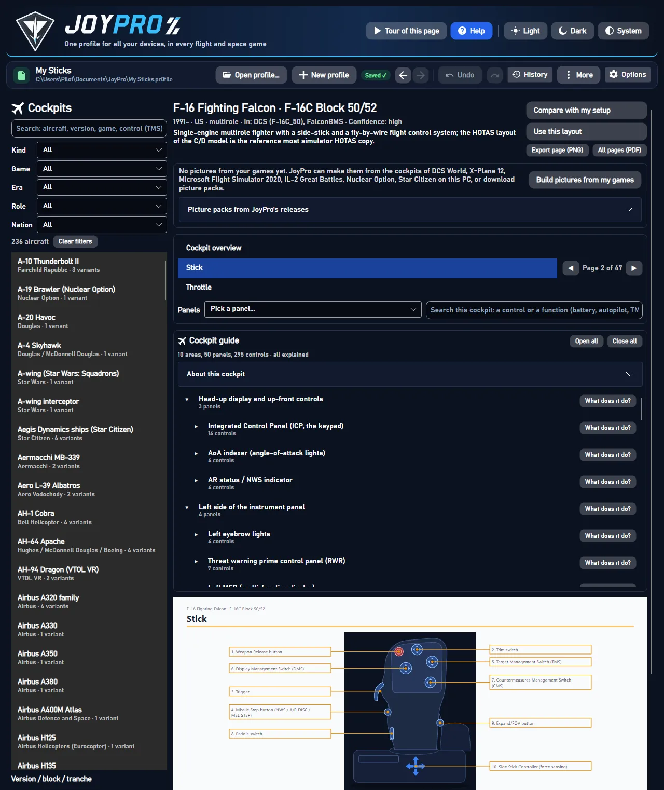

#필터 지우기
버튼작성됨검색 상자를 비우고 종류, 게임, 시대, 역할, 국가를 "전체"로 되돌립니다: 기체 목록 전체가 다시 표시됩니다.
조종석 페이지는 실제 및 가상의 조종석 참고 자료로, 비행 교범의 조종석 장처럼 정리되어 있습니다. 기체, 버전, 좌석을 고르고 개요, 그립별 페이지(스틱, 스로틀, 사이클릭, 컬렉티브)와 HOTAS 표, 패널별 페이지를 읽으세요. 프로필이나 게임은 아무것도 바뀌지 않습니다. 어떤 기능을 어떤 버튼에 둘지 정하는 데 도움을 주며, 이 레이아웃 사용은 기체의 스틱과 스로틀 레이아웃으로 설정 마법사를 엽니다.


번호가 붙은 설명선이 있는 그립 도면과 HOTAS 표: 조작 장치와 방향(누르기, 길게 누르기, 누르고 있기)마다 한 줄, 모드(NAV, A-A, A-G 또는 TGP, HUD)마다 한 열. 실제 기체가 각 버튼을 쓰는 방식이며, 나만의 바인딩을 만들 때 좋은 본보기가 됩니다.


설치된 게임에 그 기체가 있으면, 내 게임에서 이미지 만들기가 게임의 조종석을 그리고 클릭할 수 있는 모든 조작 장치에 번호와 게임에서 쓰는 이름을 붙입니다. 가지고 있지 않은 기체는 JoyPro가 다운로드할 이미지 팩을 제공하고, 어떤 게임에도 없는 조종석은 JoyPro의 라벨을 얹은 검증된 사진을 제공합니다.
게임에는 아무것도 쓰이지 않습니다. 내 설정과 비교는 열린 프로필이 그 게임과 기체에 이미 바인딩한 기능을 HOTAS 표에 표시하므로, 아직 빠진 것을 한눈에 볼 수 있습니다.
Documents\JoyPro2\Cockpits에 저장합니다. 폴더 열기로 그 폴더를 엽니다.변형을 열면 JoyPro는 다음 중 존재하는 첫 번째 것을 보여 줍니다:
구역(왼쪽 콘솔, 메인 패널, 오버헤드) > 패널("ENG & JET START control panel") > 조작부(모든 스위치, 버튼, 노브와 그 위치). 조작부를 클릭하면 그 조작부가 있는 페이지가 열리고 콜아웃에 원이 표시됩니다. 콜아웃을 클릭하면 가이드에서 그것이 선택됩니다. 모두 열기 / 모두 닫기는 모든 구역을 열거나 닫습니다.
CockpitsViewModel.cs(선택기, 필터, 비교, 레이아웃 사용), CockpitsViewModel.Pages.cs(매뉴얼 페이지, 내보내기), CockpitsViewModel.Guide.cs, CockpitsViewModel.Pictures.cs, CockpitsViewModel.PicturePacks.cs, CockpitsViewModel.VerifiedPhotos.cs. 페이지 뷰 ManualPageView.DB\Cockpits\*.json(기체, 변형, 조작부, 패널), DB\Cockpits\drawings, line-drawings, guide, photo-labels(검증된 사진마다 파일 하나).<data>\GameData\CockpitPictures\<game>\<aircraft>(pictures.json, index.json), 검증된 사진은 <data>\CockpitPhotos\<aircraft>, 링크된 사진은 다운로드 캐시에 있습니다. 사진 허용 답변은 장치 사진 답변과 함께 저장됩니다(cockpit:<aircraft>).engine cockpits(list, search, 이 레이아웃 사용용 get --json, 내 설정과 비교용 compare, PNG/PDF용 render, pictures build|status|check, photos). 참고: cockpits, privacy.이 페이지의 바탕이 된 기능 문서(저장소에서 생성):
프로그램 소스에서 읽은 조작 요소 26개: 작성됨 26개, 소스의 정보(툴팁, 코드 주석, 엔진 호출)가 있는 것 0개, 아직 보완할 것 0개.
검색 상자를 비우고 종류, 게임, 시대, 역할, 국가를 "전체"로 되돌립니다: 기체 목록 전체가 다시 표시됩니다.
툴팁 열려 있는 프로필에 관계가 있는 모든 기능을 표시합니다 (이 변형의 게임과 기체 기준)
열린 프로필을 이 변형과 비교합니다: HOTAS 표에서 내 관계 중 하나가 그 게임과 기체에 대해 가진 기능마다 관계와 입력과 함께 ✓가 붙고, 몇 개의 기능이 채워졌는지 한 줄로 알려 줍니다.
읽기만 합니다. 열린 프로필이 필요합니다.
툴팁 이 기체의 스틱과 스로틀 레이아웃을 설정 마법사에 전달합니다 (엔진 cockpits get ... --json)
이 변형으로 설정 마법사를 엽니다: 이 기체가 우선순위 목록의 맨 위로 가고, 계획은 기체의 첫 번째 변형 대신 이 변형의 스틱과 스로틀에 맞춰 기능을 배치합니다.
적용 전에 열어 둔 마법사도 이것을 받습니다.
툴팁 이 페이지를 내 도면 스타일의 이미지로 저장합니다 (설정 > 도면)
표시된 페이지를 내 도면 스타일의 PNG로 Documents\JoyPro2\Cockpits에 저장합니다. 이름은 기체, 변형, 페이지를 따르며 같은 이름의 파일은 바뀝니다.
폴더 열기를 누르면 열립니다.
툴팁 이 변형의 모든 페이지를 하나의 PDF로 저장합니다
툴팁 설치된 게임 ({0})의 조종석을 렌더링하며, 클릭할 수 있는 모든 컨트롤에 번호와 게임에서 부르는 이름을 붙입니다. 이 PC에서 만들어지며 게임 데이터와 함께 보관됩니다.
이 PC에 설치된 게임의 조종석을 렌더링하며, 클릭할 수 있는 모든 조작 장치에 번호를 매기고 게임에서 부르는 이름을 붙입니다.
게임마다 몇 분이 걸립니다. 이미지는 게임 폴더가 아니라 게임 데이터와 함께 보관되며, 매뉴얼 페이지에서 사용됩니다.
툴팁 JoyPro가 게임에서 렌더링한 조종석 이미지(GitHub의 릴리스 자산)를 다운로드하고 확인한 뒤 게임 데이터와 함께 보관합니다
제안된 이미지 팩을 JoyPro 릴리스에서 진행률 표시줄과 함께 다운로드합니다.
각 팩은 체크섬으로 확인된 뒤 게임 데이터에 풀립니다. 그러면 그 기체의 매뉴얼 페이지에 게임 이미지가 표시됩니다.
다운로드하지 않고 제안을 닫습니다. JoyPro는 이 세션에서 이 팩들을 다시 제안하지 않습니다.
툴팁 JoyPro가 알고 있는, 설치된 게임의 모든 기체의 팩입니다. 먼저 전체 크기가 표시됩니다
JoyPro가 아는, 설치된 게임의 모든 기체에 대한 이미지 팩을 찾아 아직 이 PC에 없는 것을 전체 크기와 함께 제안합니다. 다운로드를 누르면 시작합니다.
JoyPro 릴리스에서 이 게임의 모든 이미지 팩을 다운로드합니다.
각 팩은 체크섬으로 확인된 뒤 게임 데이터에 풀립니다. 그러면 그 기체의 매뉴얼 페이지에 게임 이미지가 표시됩니다.
툴팁 이 조종석의 모든 사진을 원래 주소(또는 웹 아카이브 사본)에서 다운로드하고 JoyPro 기록과 대조한 뒤 이 PC에 보관합니다
이 조종석의 검증된 사진을 모두 원래 주소에서 다운로드하고, 각각을 JoyPro의 기록과 대조한 뒤 이 PC에 보관합니다.
이 클릭은 이 기체의 사진에 대한 '예'로도 인정됩니다. 그러면 매뉴얼에 JoyPro의 번호 라벨이 붙은 사진별 페이지가 생깁니다.
PNG와 PDF를 내보낸 폴더를 탐색기에서 엽니다. 필요하면 폴더를 만듭니다.
내 설정과 비교의 표시를 숨깁니다: HOTAS 표와 가이드가 다시 내 바인딩 없이 조종석을 보여 줍니다.
툴팁 이전 페이지
매뉴얼의 이전 페이지로 갑니다.
툴팁 다음 페이지
매뉴얼의 다음 페이지로 갑니다.
툴팁 모든 영역과 패널 열기
조종석 가이드의 모든 영역과 패널을 열어 모든 조작 장치가 나열되게 합니다.
툴팁 영역만 표시
조종석 가이드의 모든 영역을 접습니다: 영역만 나열되며, 하나를 열면 그 패널이 보입니다.
조종석 가이드에서 이 조작 장치의 설명을 열거나 닫습니다: 쉬운 말로 무엇을 하는지, "전체 속에서", 위치, 게임에서 부르는 이름, 바인딩할 명령이 있습니다.
이 기체의 사진 질문에 답합니다: 예는 지금 사진 링크를 불러오고, 아니요는 불러오지 않으며, 조종석은 항상은 묻지 않고 모든 기체의 사진을 불러오고, 안 함은 모든 조종석 사진을 멈춥니다.
아니요를 누른 뒤의 이 기체의 사진 표시는 예와 같습니다.
불러오지 못한 이 사진을 다시 불러옵니다.
툴팁 사진 자체를 브라우저에서 엽니다(원본 크기, 거기서 저장할 수 있음)
사진 자체를 브라우저에서 원본 크기로 엽니다. 거기서 보거나 저장할 수 있습니다.
사진이 게시된 페이지를 브라우저에서 엽니다.
이 출처를 브라우저에서 엽니다. 주소는 도구 설명에 있습니다.